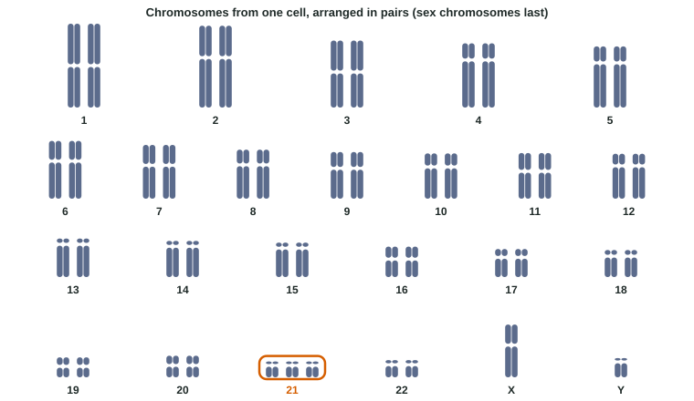

Mitosis makes identical copies. Meiosis, together with fertilization, does the opposite: it makes sure that almost every gamete, and every child, is a new combination of the parents' alleles. Three processes do this, two inside meiosis I and one at fertilization. The same divisions can also make mistakes, sending an extra chromosome or a missing one into a gamete. This page covers both: where the variety comes from, and what nondisjunction does. Topic 5.1 covers the steps of meiosis themselves.
Crossing over: mixing alleles within a chromosome
![Left, crossing over: a pair of homologous chromosomes in prophase I, the blue one carrying alleles A and B, the orange one a and b, each made of two sister chromatids. One blue and one orange chromatid swap matching pieces at a chiasma between the two genes. Afterwards the four chromatids carry A B and a b (parental, the outer two) and A b and a B (recombinant, the inner two, new mixes). Right, independent assortment: a cell with a long pair and a short pair at metaphase I, shown in two equally likely arrangements. In one, both blue chromosomes face the same pole; in the other, the short pair is flipped. The two arrangements give four kinds of gamete in equal numbers: 2 squared for two pairs. For humans, with 23 pairs, 2 to the 23rd is about 8.4 million combinations, before counting crossing over.](../figures/variation-sources.svg)
In prophase I, each chromosome is paired with its homolog along its whole length (synapsis). While they are paired, a chromatid of one homolog and a chromatid of the other can break at the same point and rejoin with each other's pieces. This exchange is crossing over. Under the microscope, the places where it happened show as X-shaped crossings called chiasmata (singular chiasma). In humans each pair usually crosses over at one to a few places.
Suppose one homolog carries alleles A and B of two genes and the other carries a and b (Figure 1, left). A crossover between the two genes produces chromatids carrying A with b and a with B. These are recombinant chromosomes: combinations of alleles that were not on either of the parent's chromosomes. The other two chromatids keep the parental combinations (A B and a b). After meiosis II, each of the four chromatids ends up in a different gamete.
The result: a chromosome you pass to a child is usually not the one you got from your mother, nor the one you got from your father, but a patchwork of both.
Independent assortment: shuffling whole chromosomes
At metaphase I the homologous pairs line up across the middle of the cell. Each pair can face either way: the homolog you got from your mother may face the left pole or the right one, and which way one pair faces has no effect on any other pair. This is independent assortment (Figure 1, right).
Worked example: counting chromosome combinations.
One pair: the gamete gets the maternal or the paternal homolog: 2 possibilities.
Two pairs: 2 × 2 = 4 combinations (both maternal, both paternal, or one of each, two ways).
n pairs: 2ⁿ combinations. For a fruit fly (2n = 8, n = 4): 2⁴ = 16. For a human (n = 23): 2²³ = 8,388,608, about 8.4 million.
Trap: use n, the number of pairs, not 2n. A human gamete has 2²³ possibilities, not 2⁴⁶.
Random fertilization: multiplying the possibilities
Any one of a father's millions of kinds of sperm can fertilize any one of a mother's kinds of egg. This is random fertilization. Counting independent assortment alone, one couple can produce about 8.4 million × 8.4 million ≈ 70 trillion different chromosome combinations in a child, and crossing over multiplies that again. That is why siblings differ, and why no two people other than identical twins (who come from one zygote) have the same DNA.
Together, crossing over, independent assortment and random fertilization create the genetic variation among offspring that sexual reproduction is known for. Note what they do and do not do: they make new combinations of alleles that already exist; they do not invent alleles that did not exist before.
| Crossing over | Independent assortment | Random fertilization | |
|---|---|---|---|
| When | Prophase I | Metaphase I (and anaphase I) | When sperm meets egg |
| What is mixed | Alleles within one chromosome (homologs swap pieces) | Whole maternal and paternal chromosomes among gametes | The two parents' gametes |
| Size of the effect (human) | Adds recombinant chromosomes to almost every gamete | 2²³ ≈ 8.4 million combinations per parent | About 70 trillion combinations per couple, before crossing over |
Nondisjunction: when chromosomes fail to separate
![One homologous pair, one blue and one orange chromosome, followed through meiosis; other chromosomes left out. Left, nondisjunction in meiosis I: both homologs go to the same pole, so after meiosis I one cell has both and the other has none; after a normal meiosis II the four gametes carry 2, 2, 0 and 0 copies (n + 1, n + 1, n − 1, n − 1): all four abnormal, and each n + 1 gamete has one blue and one orange copy. Right, nondisjunction in meiosis II: meiosis I is normal, but in one cell the two sister chromatids go to the same pole, giving gametes with 2, 0, 1 and 1 copies (n + 1, n − 1, n, n): two abnormal, and the n + 1 gamete has two identical copies. Bottom: fertilization by a normal gamete gives 3 copies (trisomy, 2n + 1) from an n + 1 gamete or 1 copy (monosomy, 2n − 1) from an n − 1 gamete.](../figures/nondisjunction-mi-mii.svg)
Meiosis depends on each homologous pair separating in anaphase I and each pair of sister chromatids separating in anaphase II. When either fails, both members go to the same pole. This failure is nondisjunction. Gametes then carry one chromosome too many (n + 1) or one too few (n − 1) (Figure 2).
| In meiosis I | In meiosis II | |
|---|---|---|
| What fails to separate | The two homologs of a pair | The two sister chromatids of one chromosome |
| Gametes from that cell | Two n + 1, two n − 1: all four abnormal | One n + 1, one n − 1, two normal |
| The two copies in an n + 1 gamete | Different: one from each homolog (one of maternal, one of paternal origin) | Identical sister copies (apart from any crossing over) |
Worked example: 2n = 8, one pair fails in meiosis I.
Normal gametes would each have 4 chromosomes. After the faulty meiosis I, one cell holds both homologs of that pair (5 chromosomes) and the other holds neither (3). Meiosis II splits each normally, so the gametes have 5, 5, 3 and 3. If instead one pair of sister chromatids fails in meiosis II, the gametes have 5, 3, 4 and 4.
Aneuploidy and its effects
When an n + 1 or n − 1 gamete is fertilized by a normal one, the zygote has the wrong number of that chromosome in every cell: aneuploidy. Three copies is trisomy (2n + 1, 47 chromosomes in humans); one copy is monosomy (2n − 1, 45). Each chromosome carries hundreds of genes, so an extra or missing copy changes the amounts of the proteins made from many genes at once. Most aneuploid embryos do not survive; monosomy of any autosome is almost never seen at birth.

- Down syndrome is usually trisomy 21 (Figure 3). It affects learning and can affect the heart and other organs. In about 90% of cases the extra chromosome comes from the egg, most often from an error in meiosis I, and the chance rises steeply with the mother's age. One explanation: a woman's egg cells start meiosis I before she is born and wait, paused with homologs paired, until shortly before each egg is released, sometimes for 40 years or more, giving the links between homologs time to weaken.
- Turner syndrome (45,X): a female with a single X and no second sex chromosome, from a gamete lacking a sex chromosome.
- Klinefelter syndrome (47,XXY): a male with an extra X, from an XX egg or an XY sperm.
Changes in sex chromosome number usually have milder effects than changes in autosomes, partly because in females one X in each cell is largely switched off anyway, so cells cope with different numbers of X chromosomes.
See how a single failure to separate spreads to the gametes, and what the zygotes look like, in the meiosis and nondisjunction simulator.
Common mistakes
- "Crossing over happens between sister chromatids." It happens between chromatids of the two homologs; swapping between identical sisters would change nothing.
- "Independent assortment gives 2⁴⁶ combinations in humans." It is 2ⁿ with n = 23 pairs.
- "Meiosis invents alleles." It makes new combinations of existing alleles.
- "Nondisjunction in meiosis II affects all four gametes." Only the two cells from the faulty chromosome's division are affected.
- "Down syndrome is inherited from a parent who has it." Most cases come from a new nondisjunction in a parent's gamete.
How the exam tests this
- Explain how crossing over, independent assortment and random fertilization each add variety, and calculate 2ⁿ.
- Predict gamete chromosome numbers after nondisjunction in meiosis I or meiosis II, and the zygote that results.
- Read a karyotype: count chromosomes, find the extra or missing one, name the sex chromosomes.
- Use data (maternal age, DNA markers) to decide which parent and which division produced an error.